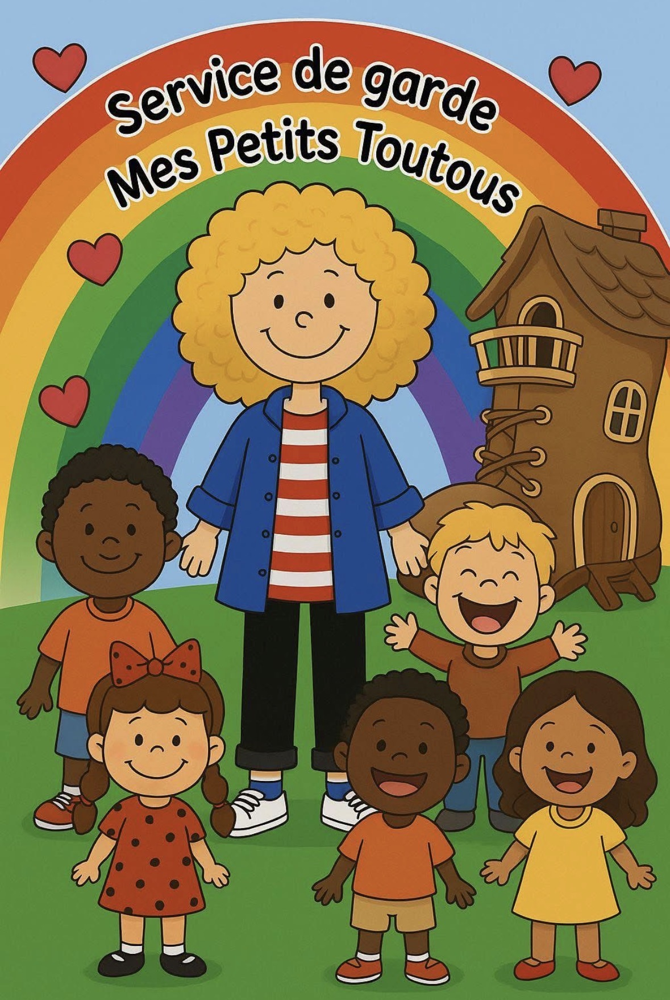

Hola, me llamo Islena Ceballos
Soy de origen colombiano. Tengo un diploma en contabilidad y un diploma como programadora-analista en informática. Siempre he tenido una profunda pasión por los niños, los deportes y los animales. Patinadora de velocidad durante diez años en mi juventud, desarrollé naturalmente valores de perseverancia y superación personal que ahora transmito a los niños a mi cuidado. Llegué a Canadá en enero de 2011 como residente permanente y abrí mi servicio de guardería familiar en 2012. Esta elección me permitió conciliar mi pasión por la educación infantil.
¿Por qué la guardería en casa?
Elegí este modelo por su capacidad de ofrecer a los niños un entorno estable, seguro y cálido, con la misma educadora durante varios años. El grupo multi-edad, a imagen de una familia, fomenta el apego, la ayuda mutua y el respeto. Los mayores se convierten en modelos para los pequeños, y cada uno progresa a su propio ritmo. Las ventajas concretas de nuestro entorno:
- Un ratio respetado: 9 niños como máximo por 2 adultos
- Un entorno familiar, cómodo y tranquilizador
- Un fuerte vínculo de apego gracias a la continuidad con los mismos adultos
- Un acompañamiento personalizado que favorece el desarrollo global de cada niño
- Una comunicación abierta y regular con los padres
Nuestra misión
Contribuir al desarrollo global de los niños respetando el ritmo y las particularidades de cada uno. Ofrecemos un entorno de vida seguro donde las actividades educativas fomentan el desarrollo, la igualdad de oportunidades y la socialización.
Nuestros valores
Respeto, acogida, ayuda mutua, amabilidad, empatía, creatividad, autonomía, perseverancia, humor y amor. Estos valores se transmiten a diario a través de nuestra presencia, nuestra escucha y nuestros juegos. Cada niño es acompañado para comprender las consecuencias de sus acciones y desarrollar su confianza en sí mismo.
Nuestra enfoque educativo
Nuestro programa se articula en torno a cuatro etapas: la observación, la planificación, la intervención y la reflexión. Cada niño es observado a diario para comprender mejor sus necesidades, intereses y fortalezas. Las actividades se planifican en consecuencia, dejando un amplio espacio para la iniciativa del niño. Priorizamos:
- El juego activo y el juego libre como motores de aprendizaje
- Rutinas claras y tranquilizadoras que ayudan al niño a orientarse en el tiempo
- Experiencias variadas: manualidades, música, exploración científica, matemáticas, lectura, salidas al parque
- Un enfoque individualizado y cariñoso
- Un estilo de intervención democrática que fomenta la resolución de conflictos entre pares
- Actividades especiales cada viernes, compartidas con los padres
Hábitos de vida saludables
El juego activo está en el corazón de nuestra vida cotidiana. Vamos regularmente al parque, jugamos al fútbol y disfrutamos del aire libre siempre que el clima lo permite. Las comidas se sirven en un ambiente cálido y respetuoso. La siesta se acompaña de música suave y una historia. La higiene personal se fomenta a través de rutinas visuales adaptadas a la edad de cada niño.
Nuestra relación con los padres
Una comunicación transparente y respetuosa está en el corazón de nuestra asociación con las familias. Compartimos actividades, menús y fotos a través de un grupo privado en Facebook y Messenger, priorizando siempre los intercambios directos por la mañana y al final del día.
En conclusión
Todo lo que hacemos, nuestras actividades, nuestra presencia, nuestro acompañamiento tiene como objetivo preparar a cada niño para su transición escolar con confianza y alegría. Al final de cada año, celebramos a nuestros "graduados" con una fiesta especial, fotos de recuerdo y un regalo simbólico para su entrada a la escuela. Elegir un entorno familiar regido por un despacho coordinador significa elegir la seguridad, el bienestar y el desarrollo de su hijo, en un marco que se asemeja a él.
Islena Ceballos
Nuestros servicios
Juegos educativos
Actividades estimulantes para desarrollar la creatividad y el aprendizaje.
Actividades al aire libre
Salidas al parque, juegos deportivos y descubrimientos en plena naturaleza.
Comidas equilibradas
Comidas saludables y adaptadas a las necesidades de los niños.
Atención personalizada
Cada niño es acompañado según su ritmo y sus necesidades.